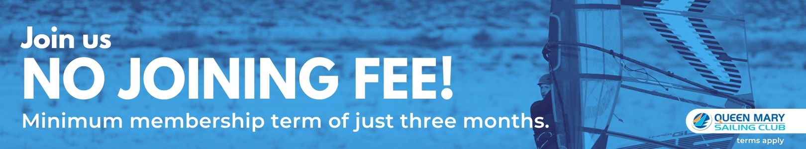

Select Windsurfing Membership

Welcome to Windsurfing without the time and costs involved in owning your own equipment. At a Sailing Club where members are not required to do Duties!
This unique gym-style membership tailored specifically for Windsurfers, provides access to a wide range of windsurfing sails and boards (and harnesses). Allowing you to rock up and go windsurfing without the time, costs and storage involved in owning your own gear. We call it Select!
- £84 per month - Select Windsurfing Adult
- £104 per month - Select Multi sport (Go Windsurfing, Sailing and Keelboating)
Join Our Club - Trial Membership Now Available!
Upon completing RYA Start Windsurfing are invited to join - with the joining fee waived if starting at the end of a course held at Queen Mary. Our Group Coaching activities are included as a regular programme of training to develop and harness your skills.
Our membership requires a minimum commitment of three months. After the initial period, it automatically continues on a rolling monthly basis. Should you wish to cancel, just provide one month's notice. And we offer additional discounts for members under 30 years old.
Start your journey with us on a three-month trial membership!
We hope you're excited - This is hassle free Sailing without the time and costs involved in owning your own equipment.
Membership grants unlimited windsurfing equipment use, a 25% discount on courses and club activities, and access to wetsuits, buoyancy aids, helmets, and support and advice from our expert team.
We hope you're excited to start!
Membership Application:
Select Windsurfing memberships have a joining that is waivered when signing up on Start Windsurfing course. To join the club as a select member please fill out the below forms and email to sailondon@queenmary.org.uk:
Click here for our members and visitors safety briefing. Furthermore, click here for the Select terms and conditions.
RATES
| Category | Joining Fee | Monthly |
|---|---|---|
| Select Windsurfing | Waivered | £84 |
| Select Windsurfing (U30) | Waivered | £62 |
| Select Multi Sport | Waivered | £104 |
| Select Multi Sport (U30) | Waivered | £82 |
View full Windsurf Equipment list (Boards & Rigs)
BOOKING EQUIPMENT
QM Select members are able to reserve equipment up to a week in advance. Bookings are preferred to enable us to anticipate arrivals yet are not mandatory. Continuation of sailing after the booked period is welcomed, subject to availability.
Once you have joined, please book here.
RIGGING
Assistance with rigging and launching is always available, with dedicated staff at weekends. QM Select members are encouraged to learn how the range of equipment is rigged, launched and stored.
PERSONAL TUITION
1:1 tuition is a great way to give skills and confidence a boost, with sessions available to QM Select members at reduced rates.